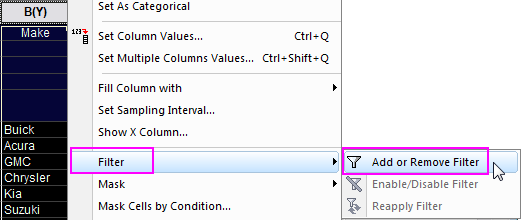
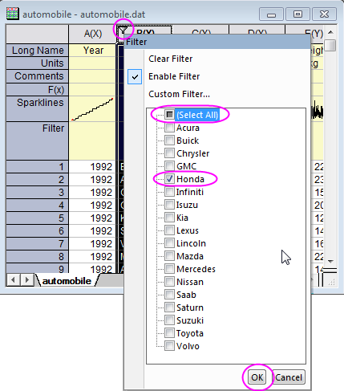
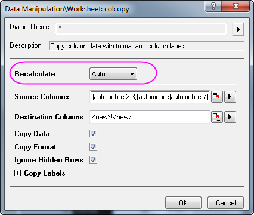
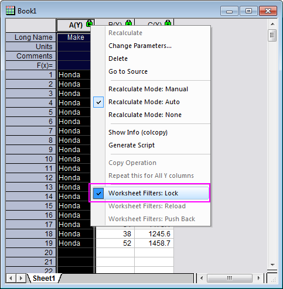

Filter für Analyse blockieren
Lock-Filter
Zusammenfassung
Wenn Sie eine grafische Darstellung oder Analyse von Daten durchgeführt wird, die einen Filter besitzen, lösen Änderungen an den Filterbedingungen des Quellarbeitsblatts im Allgemeinen eine Neuberechnung für die Analyseergebnisse bzw. das Diagramm aus.
Es gibt jedoch für die Funktionen Spalten kopieren und Pivot-Tabelle im Kontextmenü des Neuberechnungsschlosses drei Arbeitsblattfilteroptionen. Diese werden verwendet,um zu festzulegen, ob die Ergebnisse durch weitere Filteränderungen beeinflusst werden.
Origin-Version mind. erforderlich: Origin 9.1 SR0
Was Sie lernen werden
- Spalten in ein neues Blatt oder eine neue Arbeitsmappe kopieren
- Datenfilterbedingungen für kopierte Spalten blockieren
- Rückgabe der Datenfilterbedingung an das Quellarbeitsblatt
Schritte
- Importieren Sie die Origin-Beispieldaten der Datei automobile.dat, die sich im <Origin-Programmverzeichnis>\Samples\Statistics befindet.
- Markieren Sie die Spalte Make, klicken Sie dann mit der rechten Maustaste und wählen Sie Filter: Filter hinzufügen oder entfernen im Kontextmenü oder klicken Sie auf die Schaltfläche Filter auf der Symbolleiste Worksheet.

- Um nur die Daten für Honda zu zeigen, klicken sie auf das Filtersymbol
 , das oben links von der ersten Zelle der Spalten angezeigt wird. Wählen Sie Alle auswählen, um alle Optionen zu deaktivieren. Aktivieren Sie Honda. Klicken Sie auf OK.
, das oben links von der ersten Zelle der Spalten angezeigt wird. Wählen Sie Alle auswählen, um alle Optionen zu deaktivieren. Aktivieren Sie Honda. Klicken Sie auf OK.

- Um Spalten in ein anderes Blatt zu kopieren, halten Sie die Strg-Taste gedrückt und wählen Sie die Spalten Make, Power und Engine Displacement aus. Klicken Sie mit der rechten Maustaste und wählen Sie im Kontextmenü Spalte kopieren in.
- Wählen Sie im Dialog colcopy die Option Auto in der Auswahlliste Neu berechnen. Stellen Sie sicher, dass die Zielspalten auf ein neues Arbeitsblatt in der gleichen Arbeitsmappe festgelegt sind. Es wird ein neues Blatt mit den kopierten Spalten erstellt.

- Klicken Sie auf und ziehen Sie den Reiter des kopierten Arbeitsblatts in den leeren Origin-Arbeitsbereich. Eine neue Arbeitsmappe wird erstellt, in der sich die kopierten Daten befinden, so dass die kopierten Daten und die ursprünglichen Daten jetzt nebeneinander verglichen werden können.
- Klicken Sie auf das grüne Schlosssymbol für die Neuberechnung oben links von den ersten Zellen der Spalten in diesem kopierten Blatt. Wählen Sie im Kontextmenü Arbeitsblattfilter: Blockieren. Die Filterbedingungen werden in der Operation gespeichert.

- Fügen Sie im Quellarbeitsblatt der Spalte Power den Datenfilter hinzu und klicken Sie auf das Filtersymbol, um Größer als... auszuwählen. Setzen Sie im Dialog Einfacher Zahlenfilter den Wert auf 100 und klicken Sie auf OK. Der Filter zeigt nur die Daten für Power über 100 in der ursprünglichen Arbeitsmappe, aber da der Filter in der kopierten Arbeitsmappe der Daten blockiert wurde, werden sie nicht mehr aktualisiert.
- Die Filterbedingungen für die ursprüngliche Arbeitsmappe wurden geändert und um sie in den Zustand zurückzusetzen, in dem sie in der kopierten Arbeitsmappe sind, verwenden Sie die Option Auf Quellarbeitsblatt anwenden. Klicken Sie in dem kopierten Blatt auf das grüne Schloss in Spalte A und wählen Sie Arbeitsfilter: Auf Quellarbeitsblatt anwenden im Kontextmenü. Dadurch wird die Datenfilterbedingung in der ursprünglichen Arbeitsmappe zurückgesetzt, so dass die Filterbedingung, die für Power festgelegt wurde, nicht länger angewendet wird.
 |
Die Optionen zum Blockieren von Filtern sind nur in dem neuen Ergebnisblatt verfügbar. Wenn Spalten in das gleiche Arbeitsblatt kopiert werden, werden die Optionen nicht im Kontextmenü des Schlosssymbols für die Neuberechnung gezeigt.
|